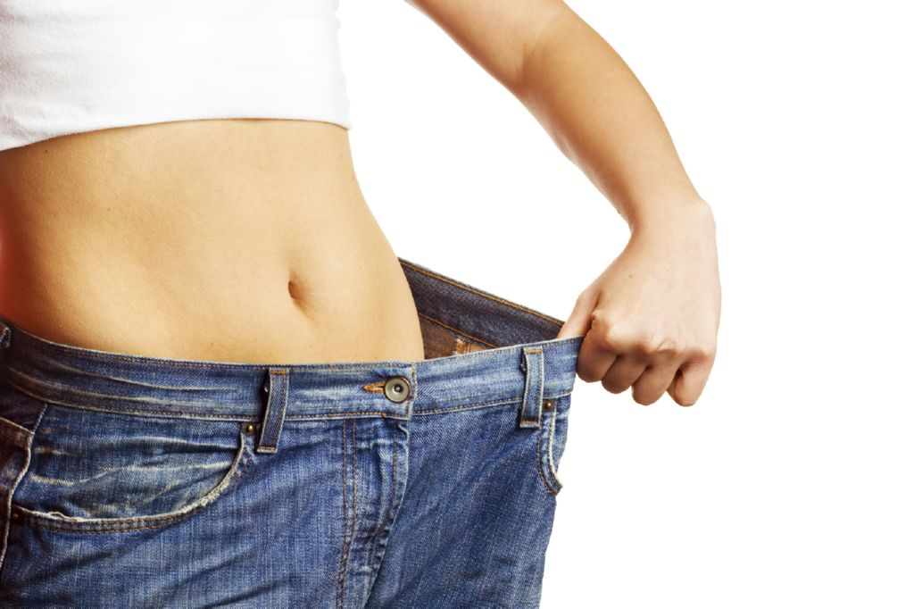

Pérdida de peso - Causas de adelgazamiento - CCM Salud
 Menu Inicio Foros Salud Familia Nutrición Bienestar Sexualidad Glosario Noticias Regístrate aquí ConéctateHaz una pregunta
Regístrate aquí Conéctate High-Tech Salud Regístrate aquí Idioma Français Español Português Italiano Conéctate Inicio Foros Salud Familia Nutrición Bienestar Sexualidad Glosario Noticias Accueil Fichas prácticas Salud Gracias 6 GraciasUnas palabras de agradecimiento nunca están de más.
Deja tu comentarioPérdida de peso - Causas de adelgazamiento
Última actualización: 18 de octubre de 2013 a las 17:46 por Jean-François Pillou . ¿Con apetito o sin apetito? Con apetito normal Con disminución del apetito Cáncer y pérdida de peso Saber másEl adelgazamiento consiste en una pérdida progresiva de peso, acompañada a menudo de debilidad y propensión al cansancio . Se presenta siempre como respuesta a un aporte insuficiente de calorías en relación a las necesidades metabólicas de la persona. Generalmente se produce a expensas de los depósitos de tejido adiposo ( grasa ) pero en los casos más severos se observa también atrofia de la masa muscular y sequedad de la piel. A menudo se asocia a hipotensión y bradicardia (disminución de la frecuencia cardíaca), con tendencia al colapso por esfuerzos mínimos.
¿Con apetito o sin apetito?
El estudio de las causas de un adelgazamiento ha de partir de una diferenciación fundamental: Con conservación del apetito. Con desaparición del apetito .
Las primeras pueden deberse a una excesiva utilización energética, como ocurre en los estados hipertiroideos o en los estados de ansiedad ; pueden también deberse a una disminución de la capacidad de absorción intestinal, como sucede en las insuficiencias pancreáticas y en muchas enfermedades del tracto gastrointestinal; o bien pueden responder a una pérdida excesiva de material muy energético por parte del organismo, como ocurre en la diabetes mellitus no controlada, en la que se registra una gran pérdida de glucosa a través de la orina , y en las parasitosis intestinales.
adelgazamientoLos adelgazamientos acompañados de pérdida del apetito responden a menudo a causas fundamentalmente psíquicas, como ocurre en la depresión que tan a menudo aflige al anciano, o bien en la anorexia nerviosa, rechazo patológico de la comida que es bastante frecuente en las jóvenes y que suele ser expresión de trastornos de orden psíquico.
Con apetito normal
Una dieta deficitaria. Un aumento en el consumo energético. Estados de ansiedad. Hipertiroidismo . Una disminución en la absorción intestinal. Enfermedades intestinales. Hipermotilidad intestinal. Insuficiencia pancreática . Enfermedad de Addison . Tuberculosis . Diabetes . Parasitosis intestinales. Fístulas . Enfermedad celíaca . Síndrome del intestino irritable . Colitis (enfermedad de Crohn).Con disminución del apetito
La anorexia nerviosa. Una depresión psíquica. Enfermedades hepatobiliares. Tumores . Infecciones . Insuficiencia renal . Enfermedades cardiovasculares . Enfermedades endocrinas. Intoxicaciones. Enfermedades de la sangre. Infección por VIH.Cáncer y pérdida de peso
Hay varios mecanismos responsables por la pérdida de peso en pacientes con cáncer . La anorexia y la pérdida de peso están presentes en más del 50% de los pacientes con cáncer en el momento del diagnóstico. Hasta un 35% de los pacientes con adelgazamiento sin causa aparente tienen cáncer. El cáncer suele causar pérdida del apetito , pero el paciente puede perder peso y masa muscular sin que exista, aún, una gran reducción en su ingestión de calorías.
El paciente con cáncer adelgaza incluso si mantiene una buena ingestión de alimentos. Esta pérdida de peso ocurre por la producción de sustancias por el tejido tumoral que lleva al consumo de masa muscular y grasa. En las fases más avanzadas, el paciente con cáncer pierde el apetito y el adelgazamiento se vuelve cada más vez más evidente.
Cuando el paciente presenta pérdida de peso el cáncer causa algún otro tipo de síntoma lo que ayuda en su diagnóstico. Algunos tipos comunes de cáncer que causan la pérdida rápida de peso incluyen el cáncer de pulmón , cáncer de colon , cáncer de páncreas y las leucemias .
Saber más
Adelgazamiento . Pérdida de peso involuntaria . Síntomas del cáncer . Gracias 6 GraciasUnas palabras de agradecimiento nunca están de más.
Deja tu comentario Haz una pregunta CCM Salud es una publicación informativa realizada por un equipo de especialistas de la salud. Consulta también Causas de perdida de peso y masa muscular Perdida de peso - Mejores respuestas Perdida excesiva de peso - Mejores respuestas Pérdida de peso sin causa aparente ✓ - Foros - Salud La masturbacion causa perdida de peso - Foros - Salud Pérdida de peso después de una operación de apendicitis ✓ - Foros - Salud Paroxetina y perdida de peso - Fichas prácticas - Adelgazar Extraccion del diu y la perdida de peso ✓ - Foros - Adelgazar El documento « Pérdida de peso - Causas de adelgazamiento » se encuentra disponible bajo una licencia Creative Commons . Puedes copiarlo o modificarlo libremente. No olvides citar a CCM Salud ( salud.ccm.net ) como tu fuente de información. AnteriorNeumonía: síntomas, diagnóstico, tratamiento
SiguienteEl fenómeno de la resaca
RecomendamosGranos en la vagina Qué es la parálisis del sueño Síntomas de la premenopausia Así actúa la píldora del día siguiente Valores normales de la presión arterial Neumonía: síntomas, diagnóstico, tratamiento El fenómeno de la resaca Regístrate aquí Equipo Condiciones de uso Política de privacidad Contacto Aviso legal
es.ccm.net